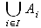

Ich möchte eine beidseitige Rechenoperation (wie z.B. union oder otimes) als einen großen Operator (wie z.B. int oder sum) darstellen. Wie kann ich das machen?
Zuerst müssen Sie das Symbol, das sie verwenden möchten, als benutzerdefiniertes Symbol definieren. Hierzu siehe FAQ #012 für weitere Anweisungen; die meisten Symbole von Formel sind in Star-Math gespeichert.
Nehmen wir an, Sie haben das Vereinigungssymbol als %union definiert. Dann können Sie zum Beispiel Folgendes eingeben:
oper %union from i in I A_i
was so aussieht:

Jedes benutzerdefinierte Symbol kann mit dem vorangestellten Schlüsselwort oper als großer Operator verwendet werden.